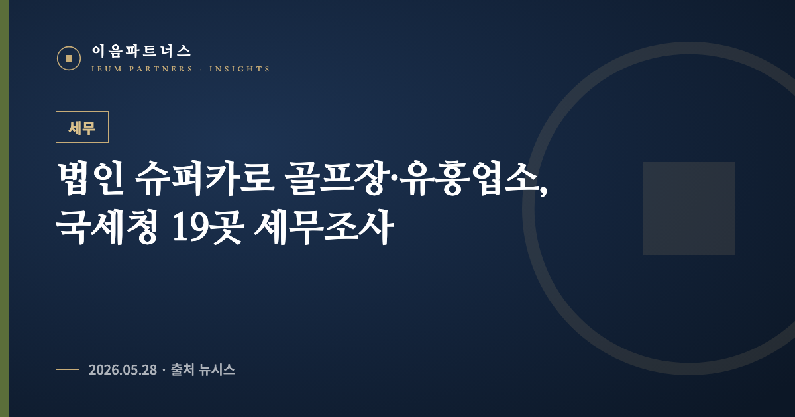

법인 슈퍼카로 골프장·유흥업소, 국세청 19곳 세무조사

법인 명의로 차를 사고 대표 가족이 주말 나들이나 골프장에 타고 다니는 경우가 있습니다. 국세청은 2026년 5월 28일 이런 법인 차량 사적 사용 혐의가 드러난 19개 법인에 대한 세무조사에 들어갔습니다. 이 글에서는 국세청이 무엇을 문제 삼았는지, 업무용 승용차를 가진 회사가 무엇을 점검해야 하는지 정리합니다.
법인 차량은 회사 비용 처리와 바로 이어지기 때문에 대표 개인 사용이 섞이면 조사에서 문제가 될 수 있습니다. 국세청은 차량뿐 아니라 회사 자금을 이용한 사주 일가의 호화 생활과 편법 증여까지 함께 보고 있습니다. 우리 회사 차량 관리가 걱정되신다면 카카오톡 채널 이음파트너스로 편하게 물어보셔도 됩니다.
무엇이 적발됐나
조사 대상 19개 법인이 가진 고가 차량은 90대, 약 300억 원어치이고 전체 탈루 혐의 금액은 약 3,000억 원입니다(뉴시스). 일부 법인은 8천만 원이 넘는 차를 사면서 연두색 번호판을 피하려고 차값을 낮춘 다운계약서를 썼고, 업무용으로 신고한 차량을 유흥주점·클럽·골프장에 쓰면서 운행기록부를 조작했습니다.
| 구분 | 내용 |
|---|---|
| A사(제조업) | 3억 원 이상 슈퍼카 6대(36억 원)를 포함해 수입차 45대 보유, 룸살롱에서 법인 비용 15억 원 사용, 급여 약 60억 원을 더 받음 |
| C사(뷰티 제조) | 7억 원 상당 슈퍼카 3대를 리스해 사주 배우자가 사용, 가족 인건비 약 15억 원 과다 지급, 법인카드 약 10억 원 사적 사용 |
| D사(건축 관련 제조·판매) | 6억 원대 슈퍼카 3대를 쓰다 사주 자녀에게 헐값 양도, 자녀 회사를 거래에 끼워 10억 원의 통행세(중간에 끼어 챙기는 이익) 제공 |
| E사(건설) | 유학 중인 사주 자녀의 귀국에 맞춰 3억 원대 수입 스포츠카를 법인 명의로 구입 |
차량만의 문제가 아닙니다
국세청은 차량 사적 사용 외에도 회사 자금을 이용한 호화 생활, 변칙 회계처리를 통한 법인자금 유출, 사주 자녀에 대한 편법 증여 혐의를 함께 조사합니다. 금융계좌 추적과 디지털 포렌식(삭제된 전자 자료를 복구·분석하는 기법)을 쓰고, 차명계좌나 증빙 조작이 확인되면 “조세범 처벌법에 따라 고발 조치하는 등 엄정하게 대처할 예정”이라고 밝혔습니다(뉴시스).
정부는 2016년 업무용 승용차의 전용보험 가입과 운행기록부 작성을 의무화했고, 2024년부터는 8천만 원 이상 법인 승용차에 연두색 번호판을 붙이도록 했습니다. 1억 원 이상 법인 승용차 신규 등록은 2023년 5만 1,542대에서 2024년 3만 3,960대로 줄었지만, 2025년에도 3만 3,929대로 비슷한 수준이었습니다.
대표님이 지금 확인할 것
- 법인 명의 승용차마다 업무용 승용차 전용보험에 가입돼 있는지
- 운행기록부를 실제 운행 내용대로 쓰고 있는지
- 대표 가족이 주로 타는 차를 회사 비용으로 처리하고 있지 않은지
- 차를 사거나 리스할 때 계약서 금액이 실제 거래 금액과 같은지
참고한 자료
- 법인 명의 슈퍼카 타고 골프장·룸살롱 누빈 오너들…탈세 혐의 19곳 세무조사 — 뉴시스 (2026.05.28)
업무용 승용차 비용 처리를 어떻게 관리하면 좋을지 궁금하시다면 카카오톡 채널 이음파트너스에서 함께 살펴보실 수 있습니다.
※ 이 글은 일반적인 정보 제공을 위한 것으로, 개별 사안은 세무사·노무사 등 전문가와 함께 확인하시기 바랍니다.